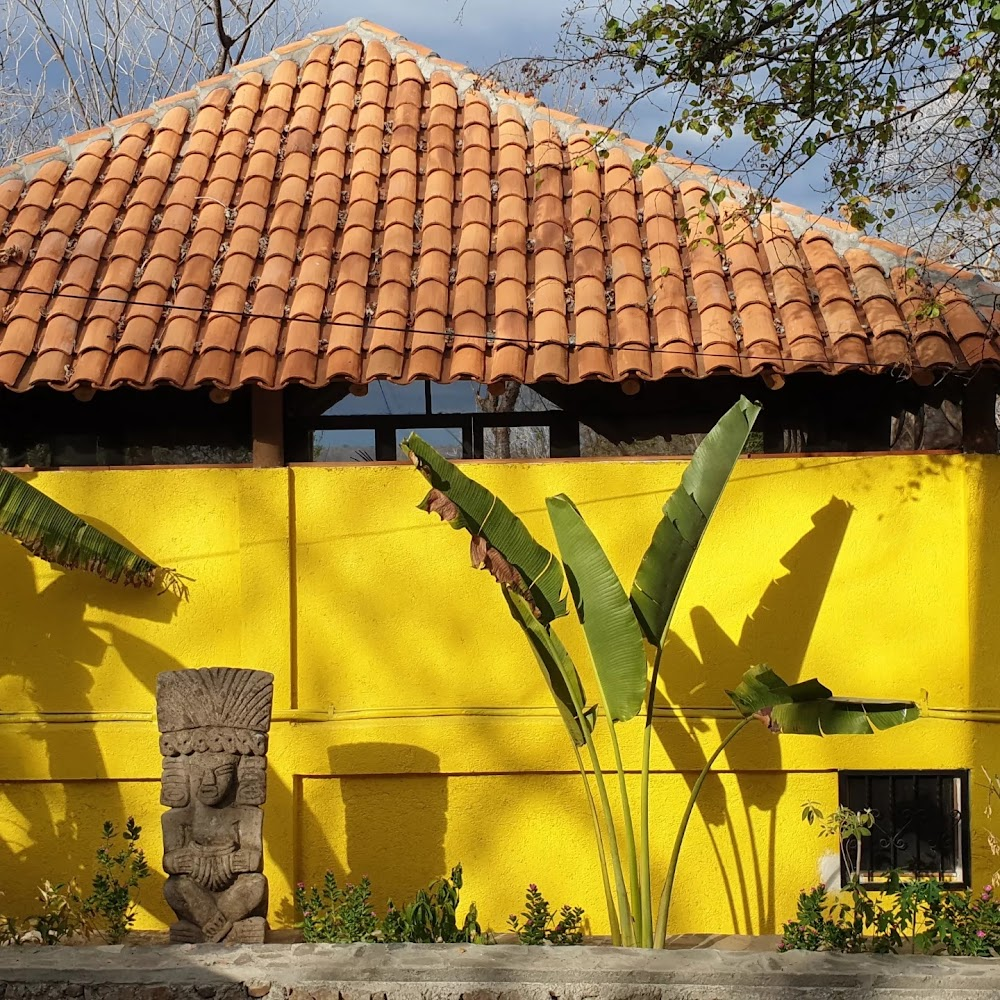
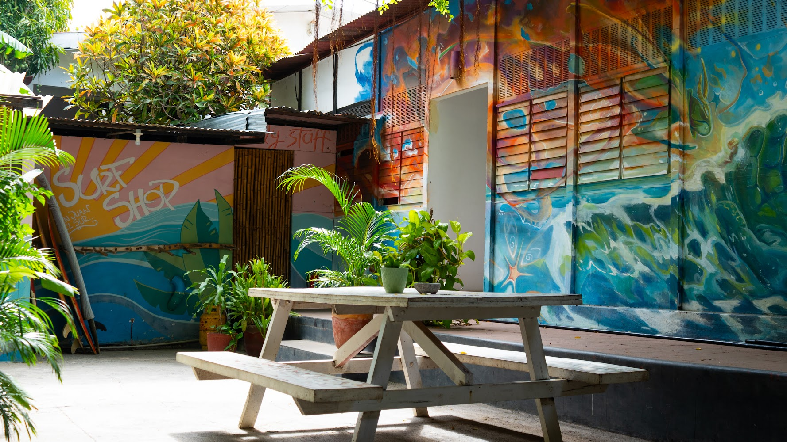
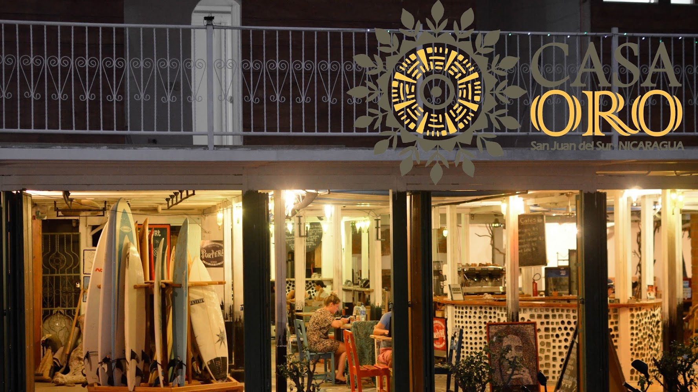
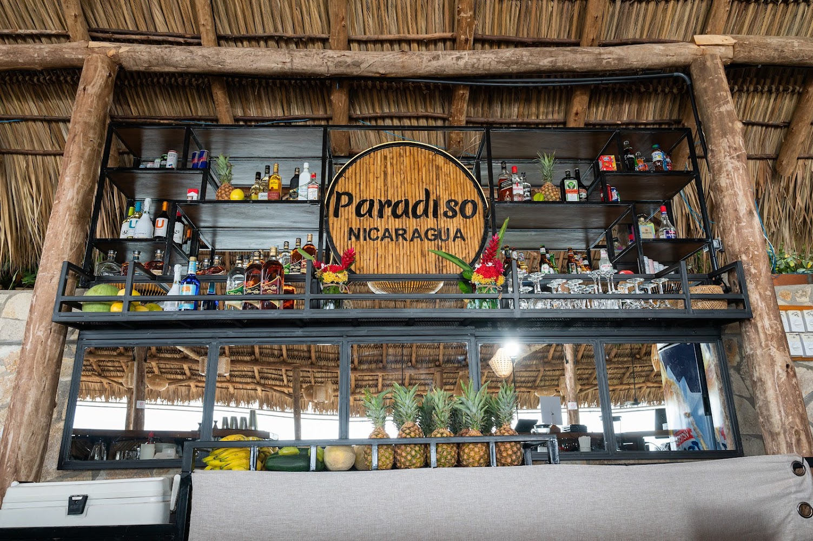
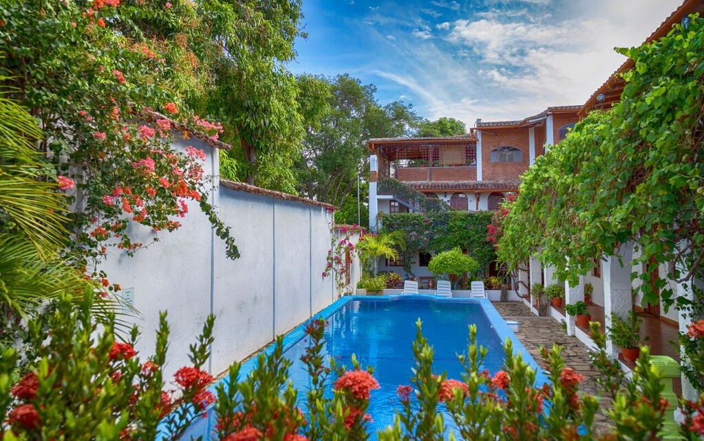
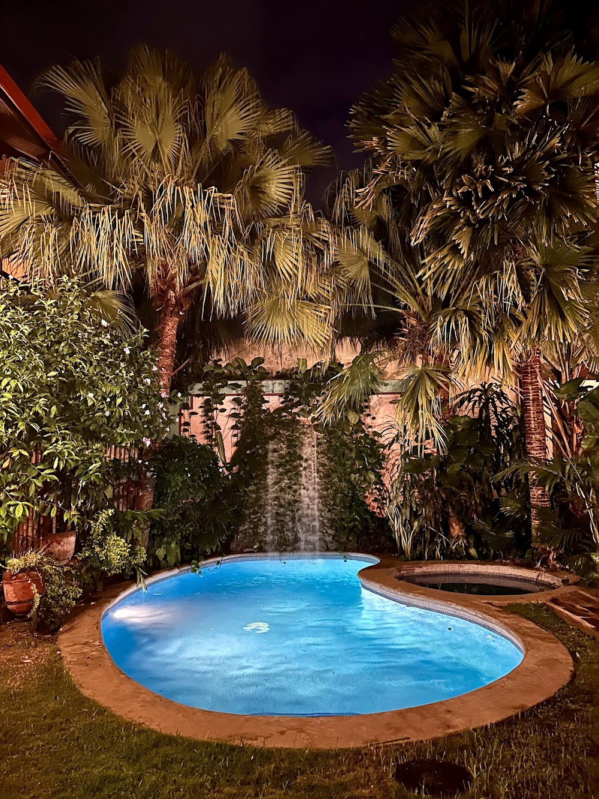
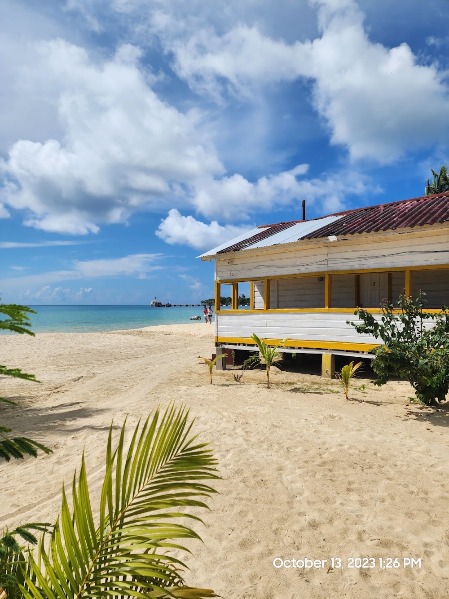
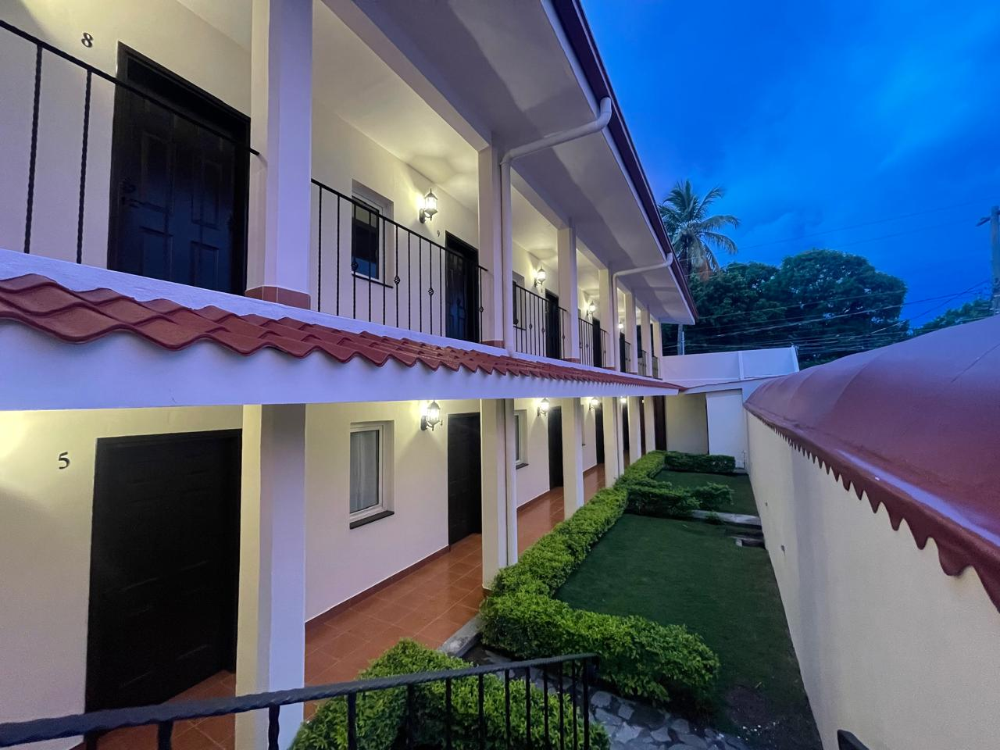
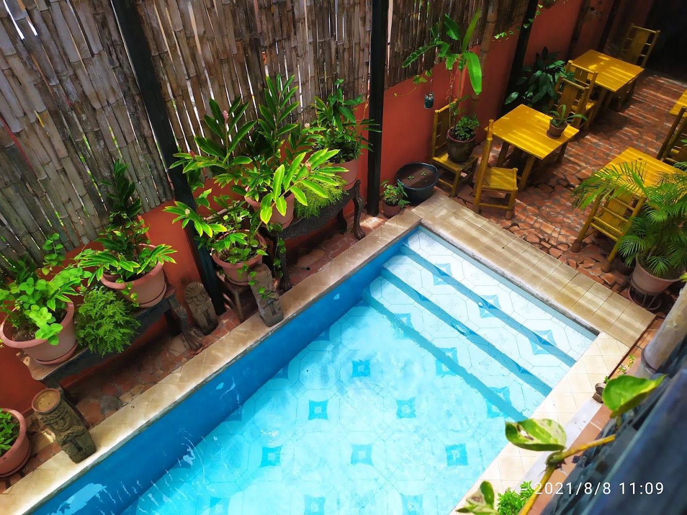

Coop. Guías Comunitarios del Cañón
Coop. Cañón de Somoto
32 familias campesinas de Sonís y El Guayabo. Recorridos acuáticos seguros con chalecos salvavidas certificados, lanchas y hospedaje rural familiar con rosquillas calientes.



Posada Ecológica La Abuela
Posada La Abuela
Alojamiento sustentable sobre la orilla de la laguna de aguas minerales. Cabañas de madera nativa, kayak libre de motor, huerto orgánico y respeto a la fauna silvestre.


Arenas Beach Hotel & Cabañas
Arenas Beach Hotel
Frente a las aguas turquesa de Big Corn Island. Cabañas rústicas sobre arena blanca, pesca artesanal con pescadores de la isla y cocina criolla de rondón de mariscos.



Coop. Baqueanos Cerro Negro
Baqueanos del Volcán
Guías locales comunitarios para ascenso al cráter activo y sandboarding seguro con equipo de protección integral. Fondos destinados a la reforestación de la base volcánica.


Red Comunitaria Finca Magdalena
Finca Magdalena & Ometepe
Cooperativa agropecuaria en las faldas del volcán Maderas. Senderos a petroglifos sagrados, café orgánico de altura y cabañas rústicas con vista panorámica al lago Cocibolca.

Finca Agroecológica Selva Norte
Selva Norte Agroecológica
Café de sombra 100% orgánico certificado y senderos de avistamiento del Quetzal resplandeciente. Cabañas de niebla, biogas comunitario y cero uso de agroquímicos.


Paraíso Beach & Eco-Resort
Paraíso Beach Resort
Cabañas bioclimáticas rodeadas de jardines tropicales. Snorkel en arrecifes de coral vivos, kayaks y gastronomía costeña con pescadores locales de la isla.

San Simián Eco-Lodge
San Simián Lodge
Bungalows ecológicos escondidos entre la vegetación del cráter. Acceso directo a aguas termales y minerales, avistamiento de monos aulladores y alimentos frescos de la comarca.

Posada del Sol & Mirador
Posada del Sol Catarina
Hospedaje atendido por artesanos de Masaya y Catarina. Talleres de alfarería precolombina, gastronomía típica y vista panorámica inigualable a la caldera de Apoyo y Granada.



Hotel Darío & Casona Colonial
Hotel Darío Granada
Joya arquitectónica de la época neoclásica frente al Parque Central de Granada. Patios floridos coloniales, fuentes de piedra y rescate del patrimonio literario de Rubén Darío.


.jpg)
Morgan's Rock & Reserva Marina
Morgan's Rock Eco-Lodge
Hacienda y reserva privada con puente colgante sobre el dosel arbóreo. Desove de tortugas paslama, reforestación activa de maderas preciosas y apoyo directo a escuelas rurales.


Hola Ola Eco-Hostal Comunitario
Hola Ola Eco-Hostal
Espacio solidario y ecológico con energía solar, talleres comunitarios de compostaje y conexión directa con las escuelas de surf locales de Playa Maderas y Marsella.


Feel at Home Eco-Lodge
Feel at Home Campestre
Oasis de clima fresco en las faldas de las Sierras de Managua. Árboles frutales autóctonos, avistamiento de chocoyos y conexión estratégica hacia Masaya y el Pacífico.


Sohla Rooftop & Terraza Cultural
Sohla Rooftop Granada
Terraza panorámica sobre las tejas coloniales de la Gran Sultana. Café de especialidad de Dipilto, coctelería a base de frutas criollas y noches de trova y son nica en vivo.